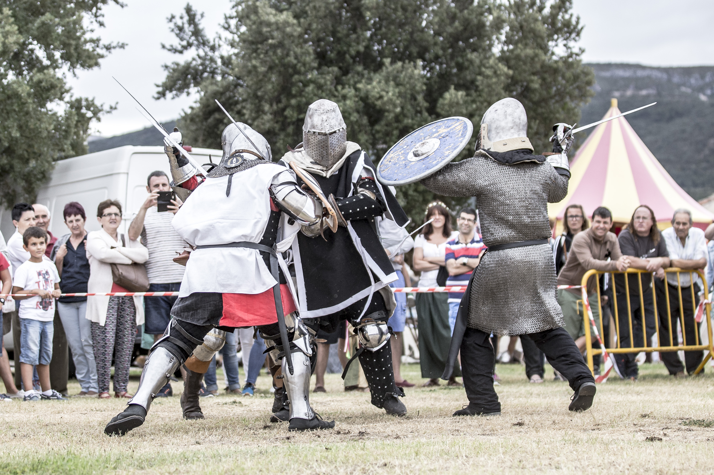
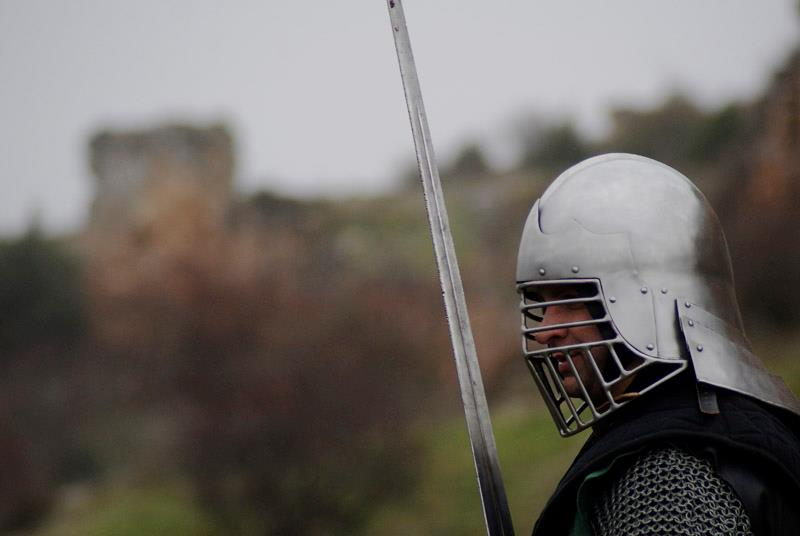

Recreación histórica
Construimos escenas, campamentos y personajes con atención al contexto histórico, los materiales, la indumentaria y la función divulgativa de cada actividad.
 Rioja Medieval
Rioja Medieval
Nuestra historia
Una asociación riojana dedicada a la recreación histórica, la divulgación medieval y la cultura viva.
Fundación
Rioja Medieval nació en 2008 impulsada por personas apasionadas por la historia medieval. Desde sus primeros pasos, la asociación se orientó a divulgar las costumbres, oficios, armamento, vestimenta y formas de vida comprendidas entre los siglos X y XV.
El grupo ha crecido hasta reunir recreadores, combatientes, colaboradores y amantes de la cultura histórica, con presencia en mercados medievales, campamentos, exhibiciones de combate, exposiciones y actividades educativas.
Construimos escenas, campamentos y personajes con atención al contexto histórico, los materiales, la indumentaria y la función divulgativa de cada actividad.
Convertimos la historia en una experiencia comprensible para todos los públicos: charlas, demostraciones, exposición de piezas y conversación directa con visitantes.
La asociación suma perfiles diversos: recreadores, luchadores Buhurt, apoyo logístico, artesanía, documentación, montaje de campamento y atención al público.
Trayectoria
Rioja Medieval ha participado durante años en actividades dentro y fuera de La Rioja: Agoncillo, Arnedo, Cornago, Olite, Belorado, Burgos, Soria, Navarra, Zaragoza, Guadalajara y otros enclaves vinculados a ferias y jornadas históricas.
Varios miembros han formado parte de la selección española de combate medieval deportivo, llevando la experiencia del Buhurt a exhibiciones, entrenamientos y competiciones internacionales.


